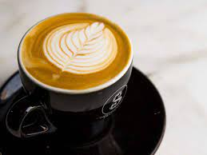
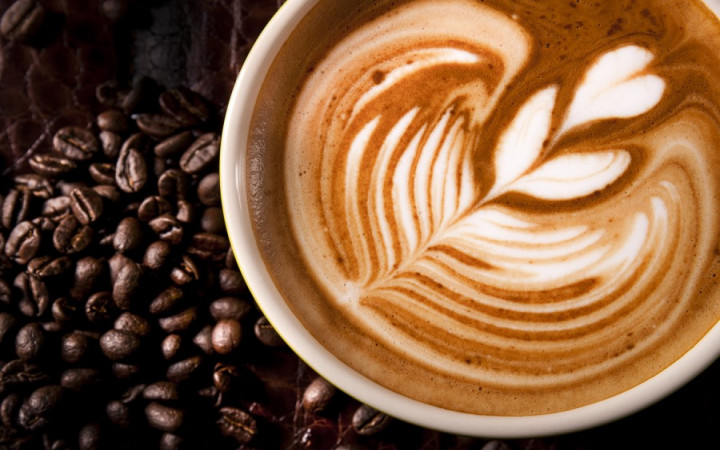
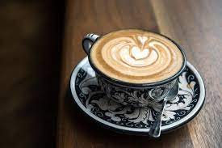
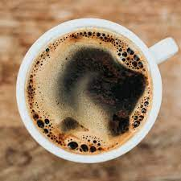

FUELING THE NORTH SHORE WITH ORGANIC COFFE AND SO MUCH MORE.... HOW SWEET IT IS..
coffee
Coffee is a brewed drink prepared from roasted coffee beans, the seeds of berries from certain flowering plants in the Coffea genus. From the coffee fruit, the seeds are separated to produce a stable, raw product: unroasted green coffee. The seeds are then roasted, a process which transforms them into a consumable product: roasted coffee, which is ground into fine particles that are typically steeped in hot water before being filtered out, producing a cup of coffee.
ESPRESSO
Espresso is a coffee-brewing method of Italian origin, in which a small amount of nearly boiling water is forced under 9–10 bars of pressure through finely-ground coffee beans. Espresso coffee can be made with a wide variety of coffee beans and roast degrees.
Caffè latte (Italian: [kafˌfɛ lˈlatte][1][2]), often shortened to just latte (/ˈlɑːteɪ, ˈlæteɪ/)[3][4] in English, is a coffee drink of Italian origin made with espresso and steamed milk. Variants include the chocolate-flavored mocha or replacing the coffee with another drink base .
LATTE
MOCHA

A caffè mocha, also called mocaccino, is a chocolate-flavoured warm beverage that is a variant of a café latte, commonly served in a glass rather than a mug. Other commonly used spellings are mochaccino and also mochachino.
A cappuccino is an espresso-based coffee drink that originated in Austria with later development taking place in Italy, and is prepared with steamed milk foam. Variations of the drink involve the use of cream instead of milk, using non-dairy milk substitutes and flavoring with cinnamon or chocolate powder.
CAPPUCINO
AMERICANS
Caffè Americano is a type of coffee drink prepared by diluting an espresso with hot water, giving it a similar strength to, but different flavor from, traditionally brewed coffee. Its strength varies with the number of shots of espresso and amount of water added.
A milkshake (sometimes simply called a shake) is a sweet drink made by blending milk, ice cream, and flavorings or sweeteners such as butterscotch, caramel sauce, chocolate syrup, fruit syrup, or whole fruit into a thick, sweet, cold mixture. It may also be made using a base made from non-dairy products, including plant milks such as almond milk, coconut milk, or soy milk.
COFFE MILK SHAKE

COFFEE..

ESPRESSIO

latte

macha

cappucino

iced coffe

americano

irish